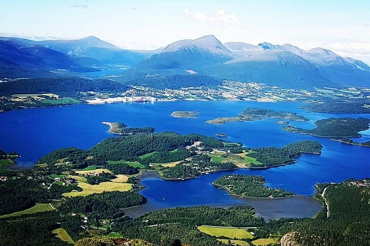

The first place i would recommend is Pille Mitt. Its great place for Hiking and also for Yoga
Molde adventure center is the second place on the list. The expirence is fantastic and very great place both for hiking and for bicycling
A trip to Romsdal will let you explore the real nature of Norway. It will leave you with unforgetable memories and it is very recommended.